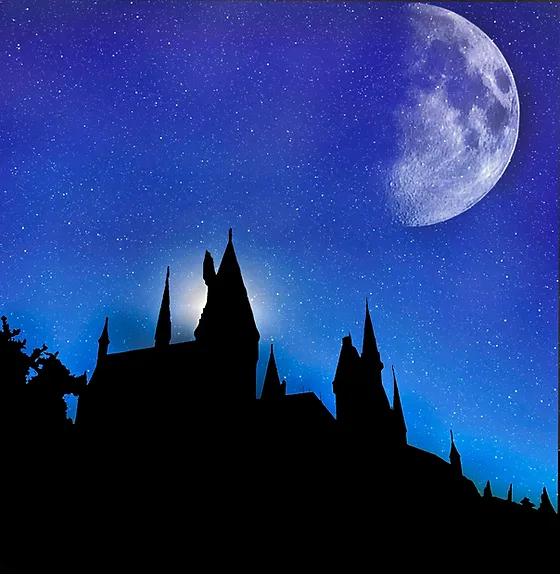
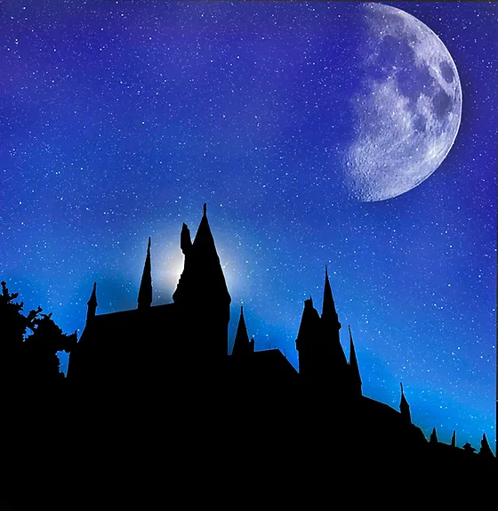

Welcome To My Hobby
On most of the pages listed above you can see methods and finished works of potography that I have done in the past.
-I started taking photography classes my freshman year of highschool and since then it grew into something I love to do when I am not playing soccer
 
